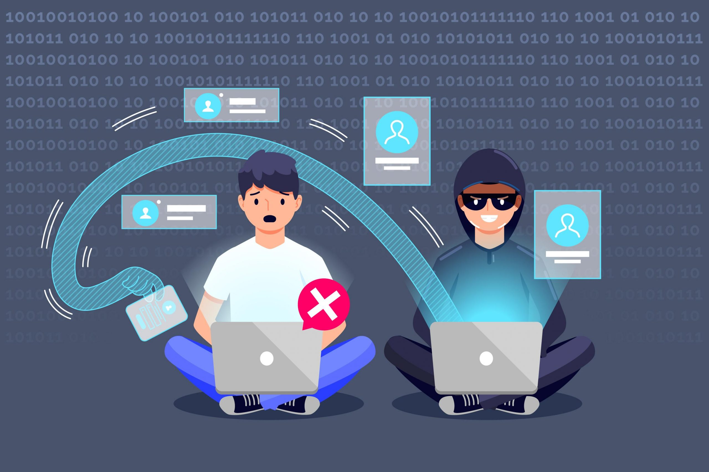
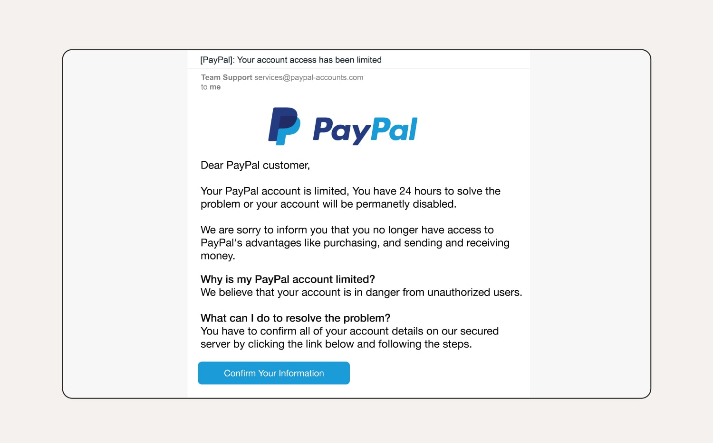
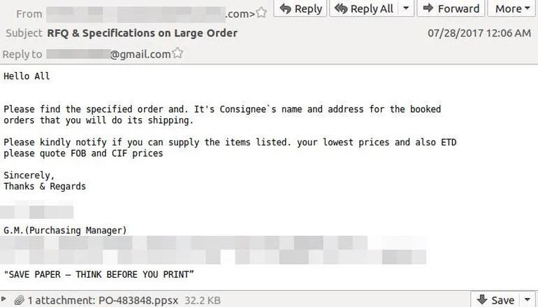
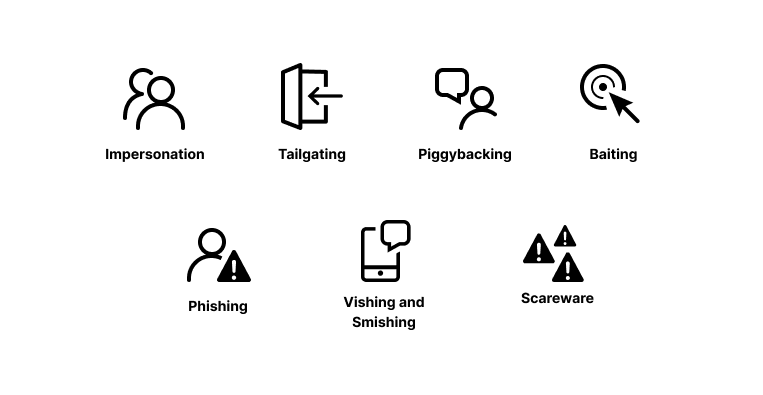
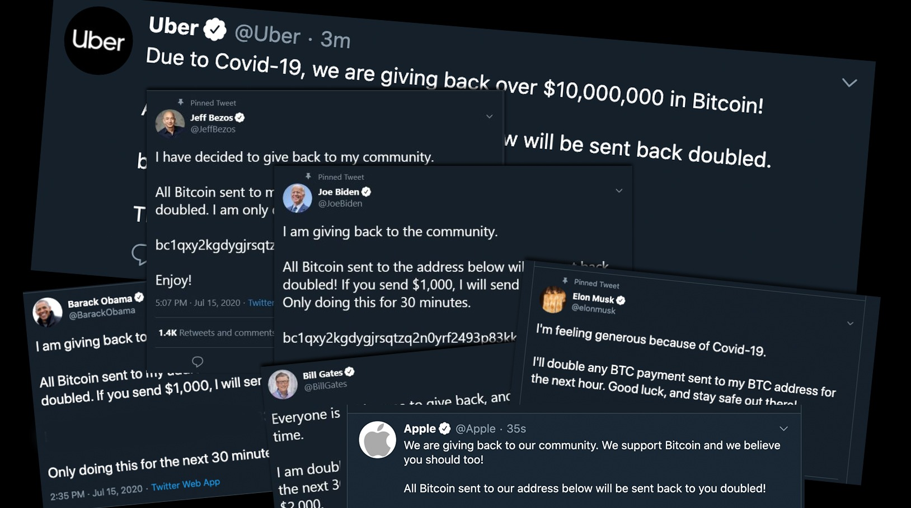
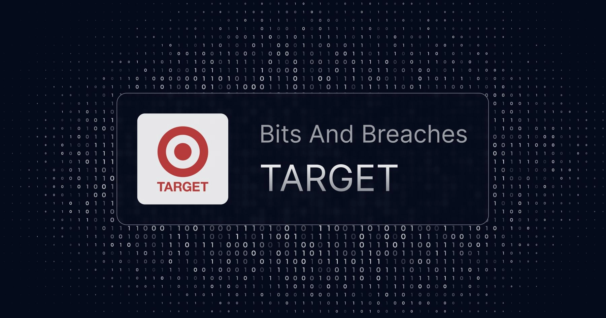

🤔 What is Social Engineering, Really?

Imagine a hacker trying to break into a high-tech security system. Sounds complicated, right? But what if, instead of cracking codes, they just ask someone for the password — and that person gives it to them willingly? 🤯
That’s the power of Social Engineering.
At its core, social engineering is the art of tricking people into giving up sensitive information or access. Instead of hacking systems, hackers target human instincts like trust, fear, greed, and curiosity. They make you feel like you have to act quickly or that they’re someone you can trust (like your bank, a coworker, or an IT support person).
Social engineering is dangerous because humans are often the weakest link in security. No amount of firewalls, VPNs, or encryption can protect you if you willingly hand over your credentials. From phishing emails 📨 to fake support calls 📞, hackers use clever tactics to manipulate your emotions — and it works.
In this blog, you’ll learn:
🔍 How social engineering works?
🕵️♂️ Types of attacks hackers use!
💡 How to spot and avoid these traps!
By the end, you’ll know how to recognize these sneaky tricks before it’s too late. Stay alert, stay sharp, and don’t let hackers outsmart your instincts. 🚀
How Social Engineering Attacks works?
Let's get to know about how SEA works?
1. Research (Information Gathering):
The attacker begins by collecting information about the target. This can be an individual, a company, or an organization. The attacker may use social media profiles, websites, employee directories, or online databases to gather personal details, job roles, habits, and daily activities of the target. This step is crucial because it helps the attacker create a convincing pretext (a believable story) to trick the victim later on. For example, learning that an employee frequently interacts with the IT department allows the attacker to impersonate an IT technician.
2. Hook (Pretext Creation and Initial Contact):
Once enough information is collected, the attacker creates a **pretext**, which is a fabricated scenario to engage the target.
This step aims to establish trust and credibility.
The attacker then makes contact via email, phone call, text message, social media, or even in-person. Examples of common hooks include:
--Phishing emails that look like official company emails asking employees to log in.
--Phone calls from "IT support" requesting access to fix a system issue.
--Baiting by leaving a USB drive labeled "Confidential Payroll Data" in a public space, hoping someone will plug it in.
--Pop-up alerts claiming "Your system is infected. Click here to fix it."
3. Manipulation (Exploitation of Human Emotions):
At this stage, the attacker applies psychological tactics to influence the target's decision-making process.
This can involve instilling fear, creating a sense of urgency, or exploiting curiosity. People are more likely to act quickly under stress, fear, or time pressure.
Attackers may say things like:
--"Your account has been compromised. You must act now!"
--"This job offer is only available for 24 hours! Click to apply now!"
--"I’m calling from the IT department. I need you to reset your password immediately to avoid being locked out."
These emotional triggers cause the target to act without thinking, making them more likely to share sensitive information, download malware, or provide unauthorized access.
4. Execution (Attack in Action):
Once the target is manipulated, the attacker moves to the action phase.
Here, the attacker collects sensitive information, installs malware, or gains unauthorized access.
For instance, the victim might:
--Click on a phishing link that installs malware or ransomware.
--Share login credentials believing they are helping an IT technician.
--Open a malicious attachment in an email that installs spyware.
--Plug in a baited USB that infects their system with malware.
By this point, the attacker has achieved their goal, which could be data theft, access to a system, or even financial gain.
5. Exit (Covering Tracks and Disengagement):
After obtaining the desired information, the attacker tries to erase their presence to avoid detection. hey may delete logs, close remote access, or cease contact entirely. In more sophisticated attacks, they may also use anonymizing tools (like VPNs) to hide their location. If the attacker installed malware, it may remain on the system undetected for long periods, waiting for more information to be collected. Attackers might also "ghost" the victim, cutting off communication to prevent suspicion.
Hence, social engineering works by exploiting human vulnerabilities, not technical ones. Attackers research their targets, create a compelling story, manipulate emotions, and execute their attack before disappearing without a trace. This process is effective because it targets Human Psychology instead of firewalls, passwords, or antivirus software.
🚨 Types of Social Engineering Attacks
1️⃣ Phishing (The Classic Email Scam)
Phishing is one of the most common and effective social engineering attacks used by hackers today. It’s simple, sneaky, and has been responsible for some of the biggest data breaches in history. At its core, phishing involves sending fake emails, messages, or links that appear to be from a trusted source — like your bank, a social media platform, or even your boss. The goal? To trick you into clicking on a malicious link, downloading malware, or handing over sensitive information like login credentials, credit card numbers, or personal data. What makes phishing so dangerous is that it preys on human emotions like urgency, fear, and curiosity. Hackers know that when people feel rushed, they’re more likely to make mistakes — and that’s when they strike.
2️⃣ Spear Phishing (A More Targeted Attack)
While traditional phishing casts a wide net, spear phishing targets specific individuals or organizations . Instead of sending generic "Your account has been compromised" emails, hackers take the time to research their targets and create highly personalized messages. This makes spear phishing much harder to detect — and far more effective. Imagine getting an email that mentions your name, your job title, and a project you're currently working on. It looks like it’s from your boss or HR. You’d probably trust it, right? Well, that’s exactly how spear phishing works. Hackers exploit your sense of familiarity and trust to get you to click a link, download a file, or provide sensitive details.
3️⃣ Pretexting (The Fake Story Trick)
Pretexting is like hacking with words. Instead of using code, hackers create a fake story (or "pretext") to trick you into giving up sensitive information, logging into accounts, or providing access to restricted areas.
Unlike phishing , where hackers rely on email links or attachments, pretexting happens through direct communication -- like a phone call, text, or even face-to-face interactions.
The hacker pretends to be someone they’re not (like a bank employee, IT support, or police officer) and builds a scenario that convinces you to share valuable information.
📉 Real-Life Examples of Social Engineering Attacks
- Twitter Hack (2020): On July 15, 2020, hackers used a combination of spear phishing and pretexting to target Twitter employees . The goal was simple -- get access to Twitter’s internal admin tools, which allowed the attackers to take control of high-profile accounts.
Once they gained access, they posted messages on accounts like Elon Musk, Jeff Bezos, Barack Obama, Kanye West, and Apple. The message on these profiles promised that if people sent Bitcoin to a specific wallet, they’d get double the amount back. 🚀
This classic "double your money" scam worked better than expected. People believed it because the messages came from trusted public figures. In just a few hours, the hackers made over $120,000 from gullible followers.

- Google & Facebook Scam: Between 2013 and 2015, a single hacker pulled off one of the most shocking scams in history by tricking two of the world's most powerful companies -- Google and Facebook -- into sending him over $100 million.
How did he do it?
Using a mix of pretexting, social engineering, and fake invoices, the hacker pretended to be a legitimate vendor/supplier that both Google and Facebook already did business with. By sending fake invoices that looked identical to real ones, he tricked Google and Facebook into thinking they owed him money.
This wasn’t just luck — the hacker did his homework. He knew exactly which vendor Google and Facebook worked with, how the invoices looked, and where to send them. The result? Both tech giants paid millions of dollars directly into his personal bank account.. - Target Data Breach (2013): The 2013 Target data breach is one of the most infamous cybersecurity attacks in history. It wasn't a sophisticated "Hollywood-style" hack with elite hackers coding furiously on keyboards. It was simple human error --and that’s what makes it so scary.
Instead of directly hacking Target’s secure systems, the attackers took an indirect route. They hacked a third-party vendor a company that provided Target with heating, ventilation, and air conditioning (HVAC) services). Once they gained access to this small HVAC contractor’s systems, they used it as a backdoor into Target’s corporate network.


🚀 How to Protect Yourself
- Be Skeptical of Unsolicited Emails, Calls, or Texts 📩📞: Hackers often send fake messages or make phone calls posing as trusted organizations. Avoid opening messages from unknown sources, especially if they ask for sensitive information or create a sense of urgency. If you receive a suspicious call, hang up and contact the company directly using a number from their official website.
- Enable Two-Factor Authentication (2FA) 🔐: Add an extra layer of security to your online accounts by enabling Two-Factor Authentication (2FA). Even if a hacker steals your password, they won’t be able to log in without the second factor, like a one-time code sent to your phone. Use a 2FA app (like Google Authenticator) instead of relying on SMS-based codes to avoid SIM-swapping attacks.
- Verify Email Links Before Clicking 🔍: Phishing emails often contain fake links that look legitimate. Before clicking, hover over links to see the actual URL. If it looks suspicious or doesn't match the official site, don't click it. Instead, manually type the company's URL into your browser to ensure you’re on the correct website.
- Don’t Share Personal Details Over the Phone 📞: No legitimate company, bank, or government agency will ever ask for your password, PIN, or OTP over the phone. If someone calls you and claims to be from your bank, hang up and call the bank directly using the official number on their website or the back of your card.
- Use Password Managers 🔑: Avoid reusing passwords on multiple sites. Use a password manager (like LastPass, 1Password, or Bitwarden) to store strong, unique passwords for each of your accounts. A strong password should be long, unique, and contain a mix of letters, numbers, and symbols. This prevents hackers from accessing all your accounts if one of your passwords gets leaked.
- Be Aware of Tailgating and Piggybacking 🚪: If you work in an office with security access points, be careful about **tailgating** — when someone follows you into a secure area without proper authentication. Hackers might pretend to be delivery people or employees who "forgot their badge." Don’t hold the door open for strangers, and report suspicious people to security.
- Don’t Trust Caller ID 🚫📞: Hackers can **spoof caller ID numbers**, making it look like the call is coming from your bank, a government agency, or a company like Amazon. If you receive a call like this, hang up and call back using the number from the company’s official website. Never trust a call just because the caller ID looks legitimate.
- Educate Yourself and Stay Updated 📘: Hackers are always developing new techniques, so it’s essential to stay informed about the latest scams. Follow cybersecurity news, take online security courses, and educate your family and colleagues on common scams like phishing, pretexting, and social engineering attacks.
💡 Final Thoughts
Social engineering isn’t just about hacking computers — it’s about hacking human instincts. Hackers know that fear, urgency, and trust are powerful tools, and they use them to manipulate people into making hasty decisions. These attacks aren’t always obvious, and sometimes they come disguised as friendly emails, urgent phone calls, or unexpected texts.
The good news? You don’t need to be a cybersecurity expert to protect yourself. Small actions, like hovering over links, questioning unusual requests, and never sharing your login details or OTPs, can make a huge difference. It’s all about staying alert, thinking critically, and trusting your gut when something feels off.
Remember, no legitimate company, bank, or support agent will ever ask for your password, PIN, or OTP. If something feels urgent, pause and verify before taking any action. Stay informed, stay skeptical, and always think twice before clicking a link or sharing sensitive information.
Hackers may be smart, but with the right knowledge, you can be smarter. The best defense against social engineering is awareness and education. By understanding their tactics, you’ll be able to spot an attack before it happens. Share this knowledge with friends, family, and coworkers — because the more people who understand how social engineering works, the safer we all are. 🚀🔐